StatementAbout the work
For each of these paintings, an attempt was made to bring to the surface hidden nature of visual language. Once forms and colors are present, a descriptive language is introduced which is responsible for conveying information regarding the occurance of an inner feeling. In this search I have tried not only to draw the viewer's attention to the surface but also to express those inner images on the canvas to show an alternative view towards life. In these works we can see worn away warps and woofs which result from the refection of them, creating a feeling of movement towards eternal transformation and change. Through these threads the human heart and face are the first to show their real identity. have made an attempt for the visual language to follow the logical relationship it has with mechanism of the background, form, and lines. In each painting colors and lines try to maintain the psychological tendencies of the style. During this process, we sometimes come across red tones which symbolize dynamic life. The inner movement mechanism of the work discovers its language by the moulting of each painting. I have tried to show how the dynamic circle of colors creates different shades in its final rotation. Visual language is emphasized, for there are lost bits of scattered thoughts which have come together to create the final composition.
I need, it also allows the viewers to participate in the completion of the inner self.
Alireza Zarif
Works19 artworks


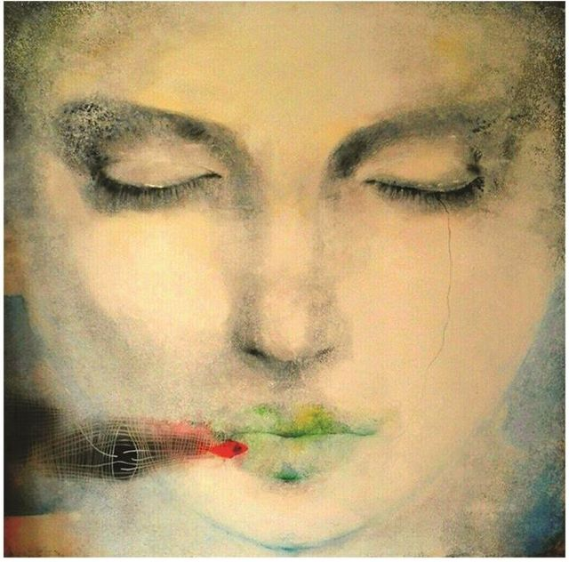

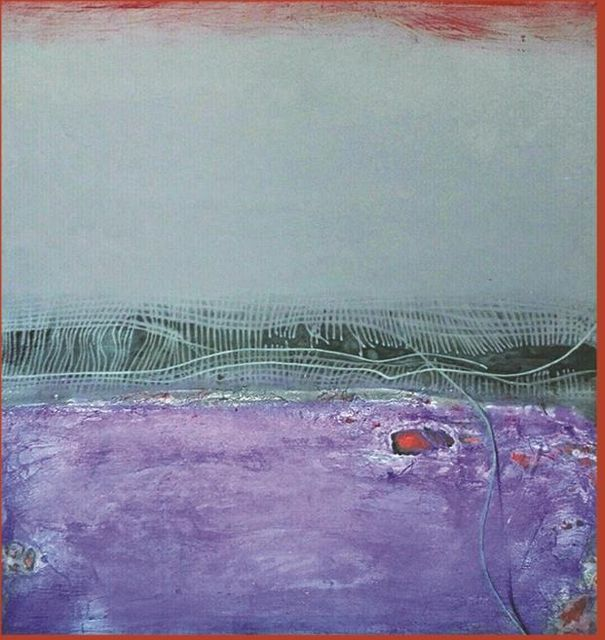

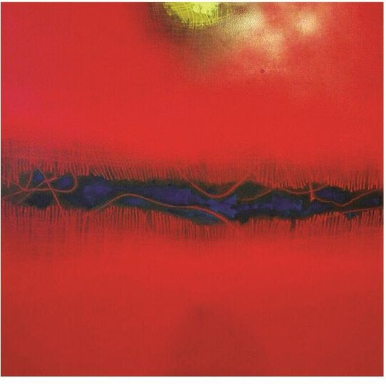

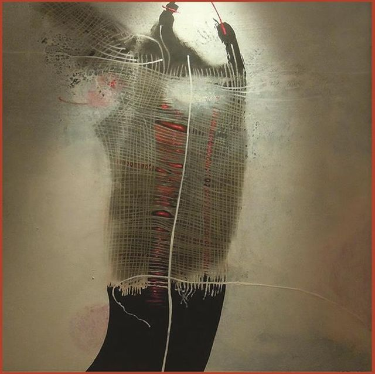

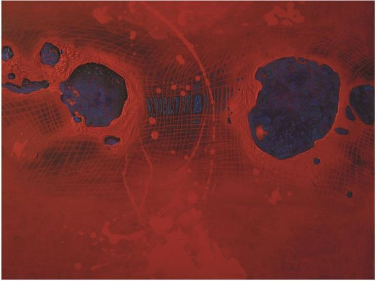

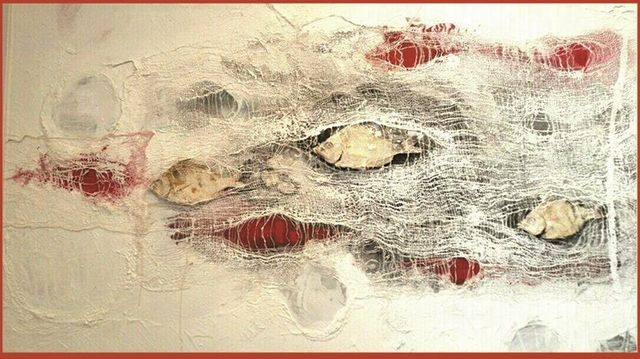

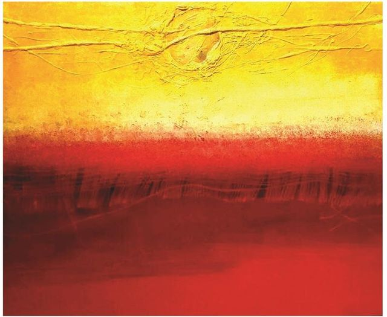

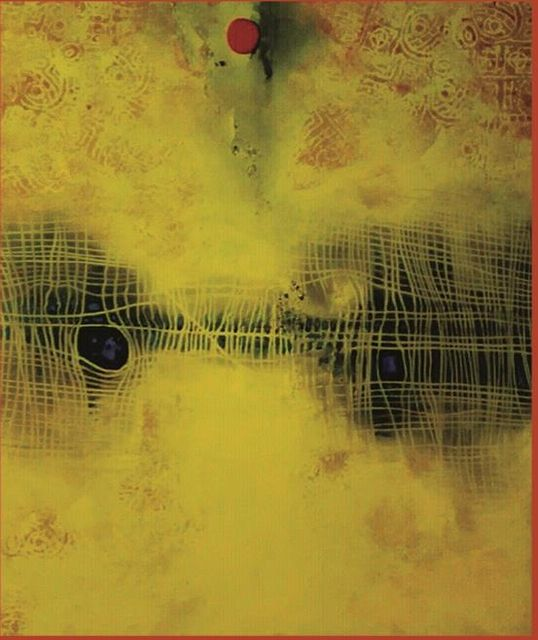

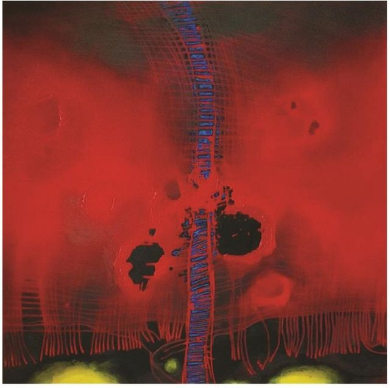

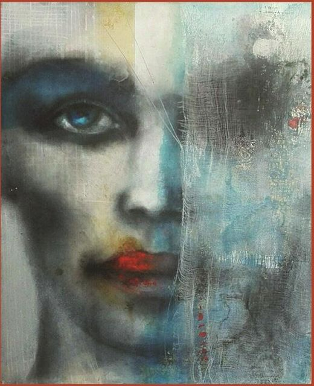

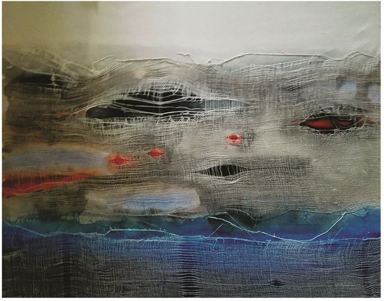

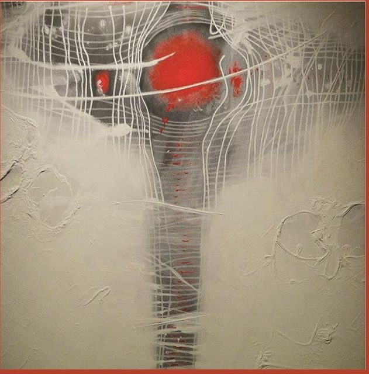

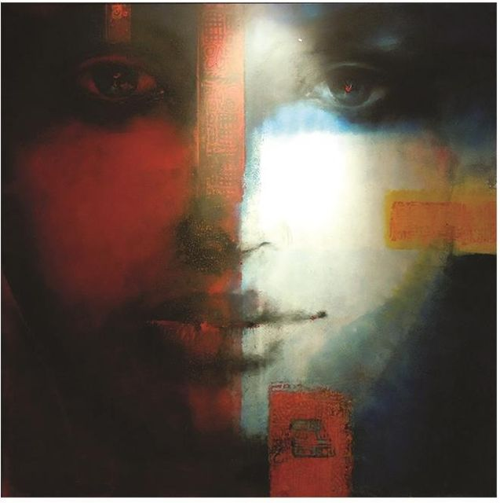

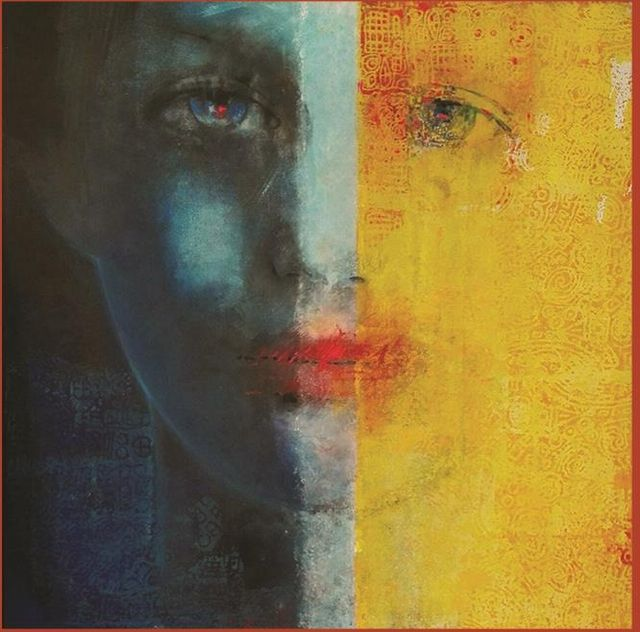

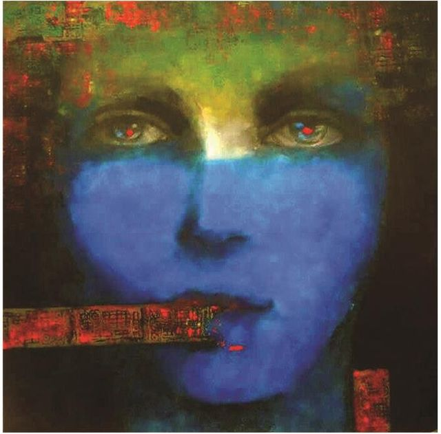

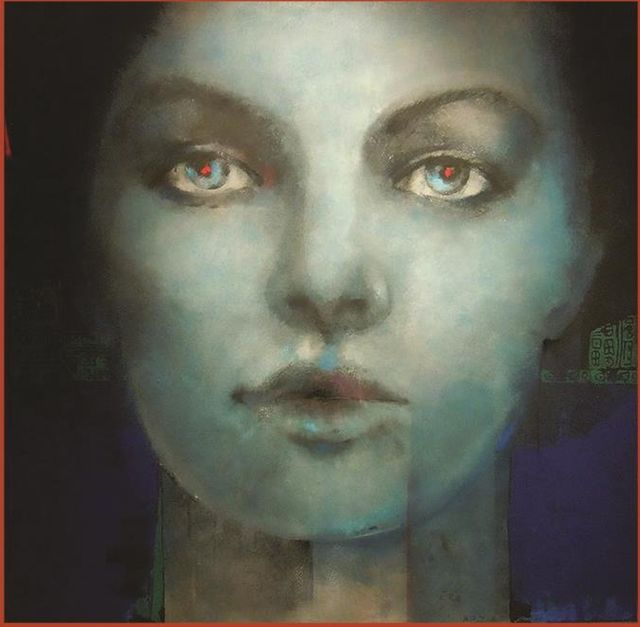

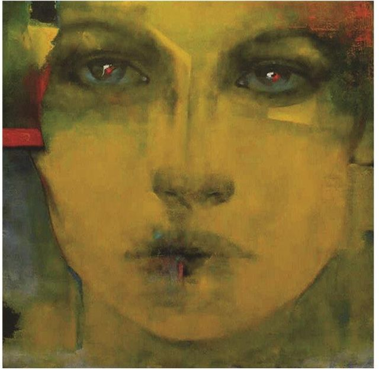

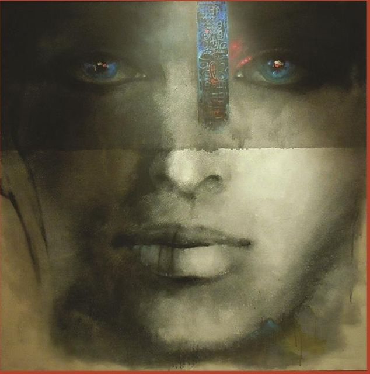
History of experienceBiography · education · exhibitions · awards
Education
- 1969–1971Studied at the Higher School of Cinema and Television for 3 years
Experience
- 1971–1987Started artistic activities with diligence in 1971 and got employed at Voice and Vision as a drawer, and senior graphic designer in 1972. My first art exhibition was held in Oil Company Staff Members Hall in Abadan (Annex). I was the founder and director of Design Gallery in Shiraz in 1987. I am also a stage and dress designer and an animator. I made some animated movies in Voice and Vision which were played on channels 9, and 1. I was also a director consultant in Voice and Vision.
- 1987–2000Director and founder of Tarh Gallery
- 2001–to–dateDirector and founder of Zarif Gallery and also the instructor of drawing, painting, graphic and architecture.
Art exhibition
- 2013Painting exhibition at Niyayesh Gallery|Shiraz – Iran
- 2006Painting exhibition at Zarif Gallery|Shiraz – Iran
- 2003Painting exhibition at the opening of Tandis Gallery|Shiraz – Iran
- 1998Painting exhibition|Kerman – Iran
- 1997Painting exhibition at Fars Institute|Shiraz – Iran
- 1994Painting exhibition at Sheykh Gallery|Tehran – Iran
- 1989Painting exhibition at Esfand Book Store
- 1988Painting exhibition at Tarh Gallery|Shiraz – Iran
- 1988Painting exhibition at Esfand Book Store
- 1977Painting exhibition at Takht-e-Jamshid Gallery|Tehran – Iran
- 1977Painting exhibition at Naghsh Gallery|Tehran – Iran
- 1977Painting exhibition at Vesal Gallery|Shiraz – Iran
- 1976Painting Exhibition at Naghsh Gallery|Tehran – Iran
- 1975Art exhibition at Oil Company Staff Members Hall (Annex)|Abadan – Iran
Source: the Sobhan Gallery artist catalogue “Sobhan Gallery. C. Alireza Zarif.pdf”.